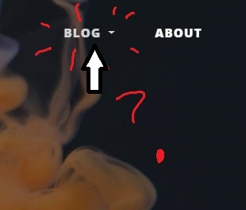
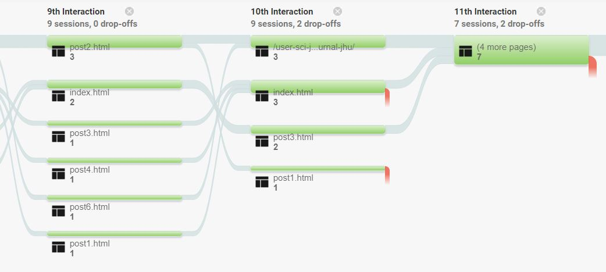
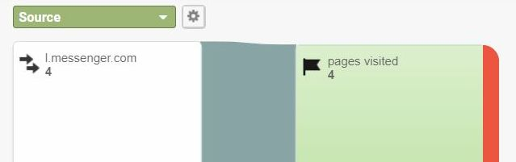

Introduction
This week I've dived deeper into goals and funnels, moving into questions of usability based on the analytics data and ways in which I could improve the presentation of the goal through content experiments.
As a reminder, the primary goal I set was to encourage traffic on the site, at least 5 visits to any unique page on the site.
Informal Usability Test
The goal I developed was fortunately easy to communicate and for people to understand. I was able to run my goal through one person who has experience with business management. She was immediately honest in suggesting that the goal is a little bit hard to achieve. However, upon checking the goal conversions, I saw a good percentage of conversions (50%).
Update: There has been reduced traffic dropping it to zero.
Review
The goal itself appears to be quite attainable, despite the impression that it's not presented effectively. It seems the Bootstrap template serves the goal conversion fairly well, with accessibility concerns addressed through use of WAVE. The only real usability barrier I noticed was that the "blog" menu was unresponsive when clicking initially. After trying on various devices I noticed the same issue. Although returning after refreshing and navigating other pages seemed to fix it, I may need to return to this issue at some point.
Evaluation
Judging from the data as it presents itself in the Behavior section, I noticed a few relevant pieces of data. The average time spent on page was 1:26 and the bounce rate is 0% which is a good start in predicting goal completion. Average pages per session was 14, which although it counts repeated visits, is a decent number. Behavior Flow indicated that a good number of users were interacting up to 10 or 11 times, with 12 being the highest.
Conclusions
I learned that all 4 conversions of my primary goal originated from social media, possibly indicating a link between mobile and higher page views. Judging from the data in the Overview alone, I saw promising results for how people were behaving on the site.
Content Experiments
I decided to utilize Google Optimize for a content experiment where I made a number of changes to enhance the usability of the site.
Most notable are the reduced font size for the header and left-aligning the post feed. These seemingly small enhancements could have a big impact as they follow principles of information architecture.

It was another slight learning curve upon jumping into Google Optimize, but I was able to follow the steps similarly to Analytics. I ran into a few error messages initially, but after making a few small changes to the code they seemed to clear up. Either the changes worked or I just needed to wait.